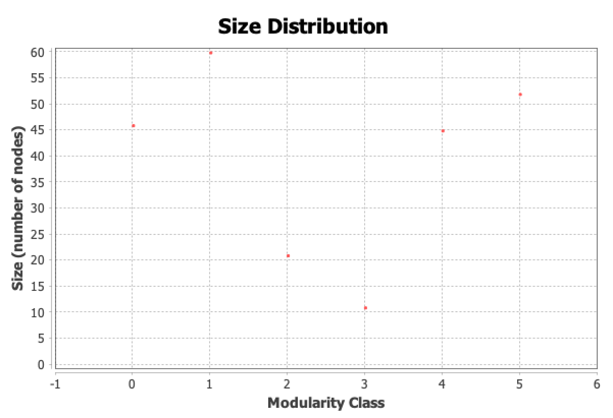
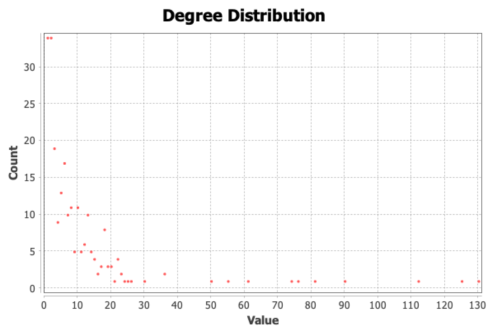
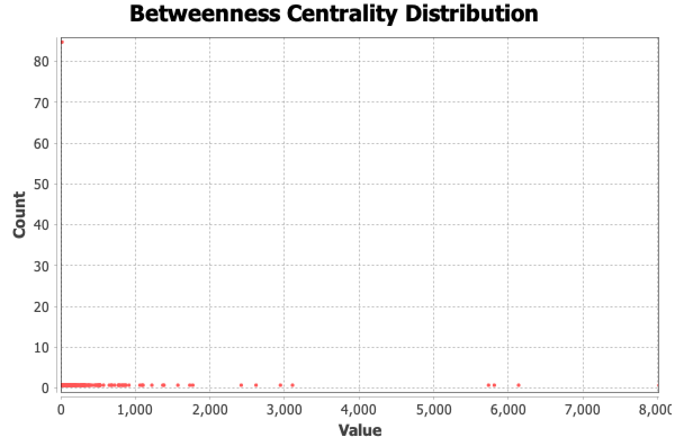
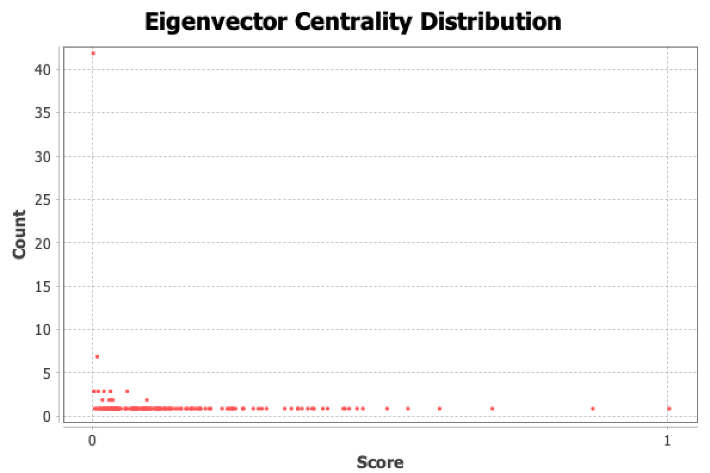
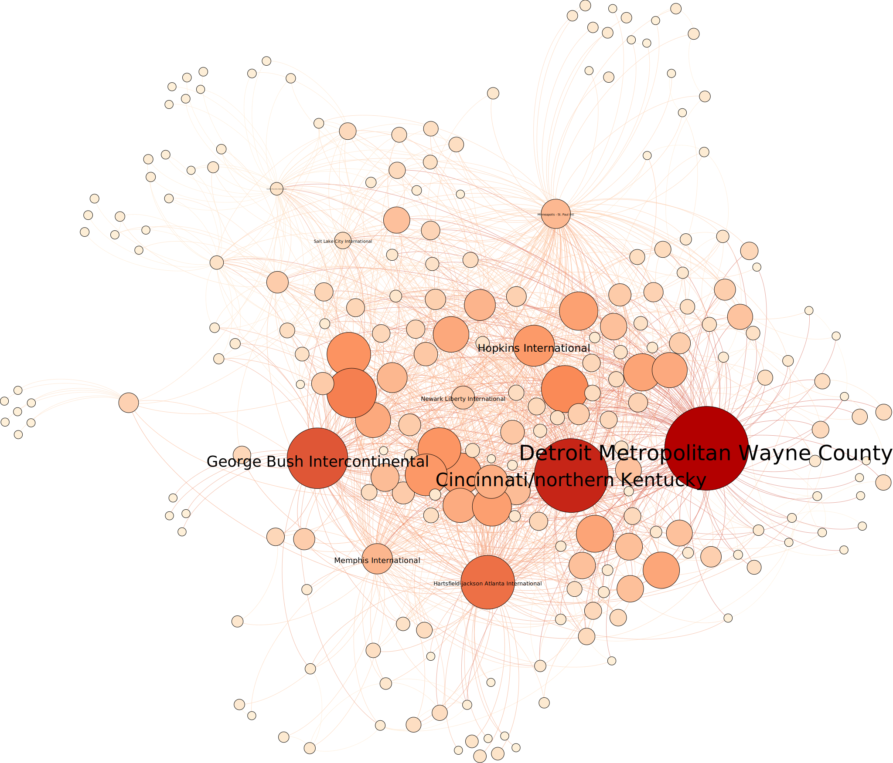

For this assignment, I chose the Airline Routes in the US dataset used for our in-class activity. This dataset contains metadata such as Code, City, Latitude, Longitude, Eccentricity, Closeness Centrality, and Betweeness Centrality. It is composed of 235 nodes and 1,296 edges.
Layout: The visualization seen above utilizes several layout algorithms applied sequentially. The first layout was the "Fruchterman Reingold" in order to make the graph into a force-directed layout. Next, the "Force Atlas 2" layout was applied to try to separate the larger clusters.
Marks: The marks in this visualization are the nodes and edges of the graph.
Channels: The channels in the visualization are the size of the node which correlates to its degree ranking, and the colors of the closeness centrality ranking (lighter means lower ranking and darker means higher raking).
After going to Statistics > Modularity > Run, the result with a resolution of 1.0 is that the modularity is 0.235 with 6 communities in the graph. The breakdown for each class is Class 0 (18.3%), Class 1 (23.4%), Class 2 (16.6%), Class 3 (22.13%), Class 4 (16.17%), and Class 5 (3.4%).  The number of nodes per class can be seen in the generated figure.
After going to Statistics > Average Degree > Run, the result is that the average degree centrality of the graph is 5.515. The implication of this average degree centrality result can be explained using the generated table.  The degree values range from 0 to 130, yet the average is ~5, which can be taken to mean that there are not very many direct connections between nodes in the network created from the airline dataset. In more precise terms, on average there are not very many airports that have direct connecting flights.
After going to Statistics > Network Diameter > Run, the result is that the average betweeness centrality of the graph is 3.006. The implication of this average betweeness centrality result can be explained using the generated table.

The betweeness centrality values range from 0 to 6000, yet the average is ~3, which can be interpreted to mean that there do not exist very many airports that lie on the shortest path between other airports. This average is reassuring, as a high average betweeness centrality would indicate airports recieving lots of flights between two clusters of other airports, which would be bad in the event of a closure at any of those particular airports.
After going to Statistics > Eigenvector Centrality > Run, the result is that the average Eigenvector centrality of the graph is 0.00816. The implication of this average Eigenvector centrality result can be explained using the generated table.  The betweeness centrality values range from 0 to 1, yet the average is ~0.008, which means in general very few airports influence the entire network. You can see on the graph above that there exists an airport with an Eigenvector centrality measure of 1, which can easily be seen on the newly generated graph below as the Detroit Metropolitan Wayne County Airport. According to Wikipedia, this airport is "one of the largest airline hubs in the country". The new channels on this graph are the size of the node which linearly correlates to its Eigenvector centrality ranking, and the colors which also linearly correlates to its Eigenvector centrality ranking (lighter means lower ranking and darker means higher raking).
